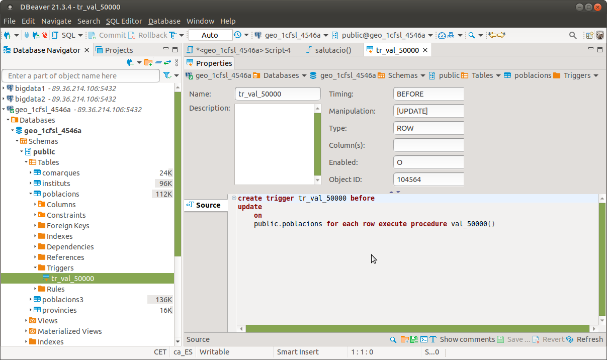

8. Triggers
Un TRIGGER o disparador és un procediment que se dispara quan s’acompleix una determinada condició que afecta a la Base de Dades: quan s’actualitza una o més d’una fila d’una determinada taula. En el moment de crear el trigger especificarem una funció que s'executarà quan es produesca l'event. Aquesta funció pot estar escrita en qualsevol llenguatge de programació instal·lat, i ha de tornar un valor especial: trigger. Juguem per tant a dues bandes. Primer amb la funció que s'executarà, i quan aquesta estiga creada, el trigger pròpiament dit.
La sintaxi de creació del trigger és:
CREATE TRIGGER nom_trig
{BEFORE | AFTER} {INSERT | DELETE | UPDATE} [OR {INSERT | DELETE |UPDATE} ...]
ON nom_taula
[FOR EACH {ROW | STATEMENT}]
EXECUTE PROCEDURE nom_funció ([paràmetres]);
Lamentablement no tenim l’opció OR REPLACE , que ens permetria no haver d’esborrar el trigger en cas de voler refer-lo (cosa prou normal). Per tant, en el cas tan habitual de voler refer un trigger , primer l'haurem d'esborrar (DROP TRIGGER) i després tornar a fer-lo, encara que si és una modificació en la funció no cal tocar el trigger.
BEFORE o AFTER indiquen quan s’ha d’activar el trigger : abans de produir-se l’acció d’inserir, esborrar o modificar, o després.
INSERT , DELETE o UPDATE indiquen quina acció d’actualització de la taula provoca (o pot provocar) el trigger.
Una actualització pot afectar més d’una fila. Aleshores ens plantegem si s’ha de disparar el trigger per a cada actualització de cada fila, o si només una vegada (abans o després d’actualitzar). Ho podrem especificar per mig de FOR EACH ROW o FOR EACH STATEMENT. L'opció per defecte és la segona.
Suposem que volem activar un disparador sempre abans d’inserir sobre la taula T1 , per a cada fila, per si la introducció no fóra correcta:
CREATE TRIGGER trigger1 BEFORE INSERT ON T1 FOR EACH ROW
EXECUTE PROCEDURE ...;
I ara que volem activar un altre després d’esborrar un conjunt de files (per exemple per a actualitzar una altra taula):
CREATE TRIGGER trigger2 AFTER DELETE ON T1 FOR EACH STATEMENT
EXECUTE PROCEDURE ...;
Anem a parlar ara de la funció que es crida quan es dispara el trigger. És una funció especial, escrita en qualsevol llenguatge definit, que com hem comentat abans ha de tornar obligatòriament un valor TRIGGER. Aquesta funció pot tenir paràmetres, i òbviament hauran de coincidir aquestos en la definició de la funció i en la definició del trigger.
Quan s'arriba a la funció, que nosaltres sempre la definirem en PL/pgSQL, s'han definit unes quantes variables especials. Anem a comentar-les:
| Nom | Tipus | Descripció |
|---|---|---|
| NEW | RECORD | Conté la fila que va a inserir-se o la nova informació, si va a actualitzar-se. |
| OLD | RECORD | Conté la fila que va a esborrar-se o la informació vella, si va a actualitzar-se. |
| TG_NAME | NAME | Conté el nom del trigger que s'ha disparat i ha cridat aquesta funció. |
| TG_WHEN | TEXT | Indica quan actua el trigger, BEFORE o AFTER. |
| TG_LEVEL | TEXT | Indica de quina manera actua, ROW o STATEMENT. |
| TG_OP | TEXT | Indica quin event ha provocat el trigger: INSERT, UPDATE o DELETE. |
| TG_RELID | OID | Conté l'identificador de la taula que ha provocat el trigger (podria ser més d'una). |
| TG_RELNAME | TEXT | Conté el nom de la taula que ha provocat el trigger. |
| TG_NARGS | INTEGER | Indica el nombre de paràmetres que se li passen. |
| TG_ARGV[ ] | VECTOR de TEXT | Vector que conté els paràmetres. |
Aquesta és una relació de variables prou extensiva. En la pràctica nosaltres només utilitzarem NEW , OLD i en tot cas TG_OP.
Una funció de trigger ha de tornar o bé NULL, o bé un RECORD, amb la mateixa estructura que la fila de la taula. Depenent del tipus de trigger (BEFORE o AFTER), podeu tornar:
Tipus de Trigger Què ha de tornar la funció de trigger BEFORE INSERT/UPDATE NEW (per modificar la fila) o NULL (per cancel·lar) BEFORE DELETE OLD (si cal registrar el valor abans d'esborrar) AFTER (cualquier tipus) NULL (perquè l'operació ja es va executar)
Si un trigger de nivell de fila (for each row) torna un valor null, no s'efectuaran més operacions (si és un delete, que esborra més d'una fila, si la funció torna null, ja no s'intentaran esborrar més files). En canvi, si torna una cosa distinta de null, aleshores es procedirà a l'actualització amb aquest valor. Així, per curar en salut, podem fer que l'última línia de la funció de trigger siga RETURN NEW; Açò pot ser molt útil, ja que si és una inserció o actualització podríem fins i tot modificar la fila NEW per a que agafe els valors que nosaltres volem (per exemple: NEW.sou := NEW.sou + 500 si estiguérem actualitzant el sou d'un empleat).
Els valors tornats per una funció trigger de nivell de statement són sempre ignorats, igual que un AFTER de nivell de fila (ja és massa tard per actuar), i per tant millor posar que tornen null.
Exemple: Modificar valors abans de la inserció (BEFORE INSERT)
Si algú insereix NULL en nom, el trigger el reemplaça per 'Desconocido'.
CREATE OR REPLACE FUNCTION evitar_nulos()
RETURNS TRIGGER AS $$
BEGIN
-- Si el campo nombre es NULL, se asigna un valor por defecto
IF NEW.nombre IS NULL THEN
NEW.nombre := 'Desconocido';
END IF;
RETURN NEW; -- Devuelve la fila modificada
END;
$$ LANGUAGE plpgsql;
CREATE TRIGGER trigger_evitar_nulos
BEFORE INSERT ON usuarios
FOR EACH ROW
EXECUTE FUNCTION evitar_nulos();
Exemple: Cancel·lar una inserció (BEFORE INSERT amb NULL)
Si el saldo és menor que 0, es cancel·la la inserció
CREATE OR REPLACE FUNCTION bloquear_insercion()
RETURNS TRIGGER AS $$
BEGIN
IF NEW.saldo < 0 THEN
RAISE EXCEPTION 'No se permiten saldos negativos';
RETURN NULL; -- Cancela la inserción
END IF;
RETURN NEW;
END;
$$ LANGUAGE plpgsql;
CREATE TRIGGER trigger_bloqueo
BEFORE INSERT ON cuentas
FOR EACH ROW
EXECUTE FUNCTION bloquear_insercion();
Anem a veure uns altres exemples en la base de dades geo_grup_9999x:
Exemple: impedir que es modifique el nombre d'habitants d'una localitat en més de 50000 persones (augmentant o disminuint). Només té sentit el control quan es modifique la columna poblacio. No té sentit ni en inserir ni en esborrar una fila. I ens convé abans d’actualitzar, per poder impedir-ho.
CREATE FUNCTION val_50000() RETURNS TRIGGER AS $cos$
BEGIN
IF abs(NEW.poblacio - OLD.poblacio) > 50000 THEN
RAISE EXCEPTION 'Massa diferència. No pot ser!!';
END IF;
RETURN NEW;
END; $cos$
LANGUAGE plpgsql;
CREATE TRIGGER tr_val_50000 BEFORE UPDATE ON POBLACIONS
FOR EACH ROW
EXECUTE PROCEDURE val_50000();
Podríem comprovar el funcionament del trigger actualitzant alguna fila de la taula POBLACIONS:
UPDATE POBLACIONS
SET poblacio = 1000
WHERE nom='Castelló de la Plana';
Com veieu estem intentant actualitzar la població de Castelló de la Plana a 1.000 habitants. Com que la població actual és de 173.841, hi haurà una diferència de més de 50.000 habitants, i per tant el trigger impedirà l'actualització:

Nota
En DBeaver veurem els triggers en la taula a la qual afecten.

Mirem un altre exemple: un trigger que actualitza automàticament el nombre d'instituts de la taula PROVINCIES (teniu la sentència de creació en la pregunta 0 d'aquest tema) quan s'insereix o s'esborra un institut. Primer s'haurà de mirar la província de l'institut que s'està introduint o esborrant, i després s'incrementa o decrementa el nombre d'instituts de la província:
CREATE OR REPLACE FUNCTION act_inst() RETURNS TRIGGER AS $cos$
DECLARE aux text;
BEGIN
IF TG_OP='INSERT'
THEN
SELECT provincia INTO aux FROM POBLACIONS,COMARQUES
WHERE POBLACIONS.nom_c=COMARQUES.nom_c AND
POBLACIONS.cod_m = NEW.cod_m;
UPDATE PROVINCIES
SET instituts = instituts + 1
WHERE provincia = aux;
ELSE
SELECT provincia INTO aux FROM POBLACIONS,COMARQUES
WHERE POBLACIONS.nom_c=COMARQUES.nom_c AND
POBLACIONS.cod_m = OLD.cod_m;
UPDATE PROVINCIES
SET instituts = instituts - 1
WHERE provincia = aux;
END IF;
RETURN NEW;
END; $cos$
LANGUAGE plpgsql;
CREATE TRIGGER tr_act_inst AFTER INSERT OR DELETE ON INSTITUTS
FOR EACH ROW
EXECUTE PROCEDURE act_inst();
Podrem comprovar-ho, per exemple, introduint un nou registre. Abans de l'actualització, el contingut de la taula PROVINCIES és:

Inserim ara el nou institut, corresponent a Castelló (el codi del municipi és 12040)
INSERT INTO INSTITUTS VALUES
('12004299','IES MARJALERIA','CAMÍ LA PLANA','S/N',12003,12040);
El contingut de la taula PROVINCIES és ara:

Un últim exemple per a veure el de FOR EACH STATEMENT. Intentarem fer un trigger per a que actualitze la població de les províncies. Ara anem a plantejar-lo de manera que calcule una altra vegada el total de les poblacions. Per tant, segurament és millor calcular-ho quantes menys vegades millor; és a dir, si es fan unes quantes actualitzacions de les poblacions, doncs calcular al final de totes elles (i no després de cadascuna).
CREATE OR REPLACE FUNCTION act_pobl() RETURNS TRIGGER AS $cos$
BEGIN
UPDATE PROVINCIES
SET habitants = (SELECT SUM(poblacio)
FROM COMARQUES,POBLACIONS
WHERE COMARQUES.nom_c=POBLACIONS.nom_c and
provincia=PROVINCIES.provincia);
RETURN NEW;
END; $cos$
LANGUAGE plpgsql;
CREATE TRIGGER tr_act_pobl AFTER INSERT OR DELETE OR UPDATE
ON POBLACIONS FOR EACH STATEMENT
EXECUTE PROCEDURE act_pobl();
Per a poder comprovar el resultat del trigger anem a fer una operació d'actualització. Per exemple anem a incrementar cada població de la comarca de l'Alcalatén en 10.000 habitants (recordeu que ja tenim un trigger que impedeix augmentar en més de 50.000).
UPDATE POBLACIONS
SET poblacio = poblacio + 10000
WHERE nom_c = 'Alcalatén';
Com que la comarca té 9 pobles, la població de la província de Castelló haurà augmentat en 90.000 habitants:

No oblidem executar l'operació de restar 10.000 habitants als pobles de la comarca de l'Alcalatén, i llevar l'institut de la Marjaleria, per deixar les coses com estaven (encara que només són dades de prova molt desactualitzades).
UPDATE POBLACIONS
SET poblacio = poblacio - 10000
WHERE nom_c = 'Alcalatén';
DELETE FROM INSTITUTS
WHERE codi = '12004299';
Per esborrar un trigger, utilitzarem la instrucció DROP TRIGGER :
DROP TRIGGER nom_trigger ON nom_taula;
La modificació d'un trigger (ALTER TRIGGER) només permet canviar el nom d'aquest trigger.
Pot ser molt útil en ocasions desactivar un trigger , de manera que no tinga efecte durant una temporada, i tornar a activar-lo més avant. Està clar que sempre podríem esborrar-lo i tornar a crear-lo quan faça falta, però serà més còmoda la desactivació. Aquesta operació es fa en l'ALTER TABLE de la taula a la qual implica el trigger.
ALTER TABLE nom_taula [ENABLE | DISABLE] TRIGGER [nom_trigger | ALL | USER ];
Com es pot comprovar, la sentència permet activar o desactivar un trigger en concret, o tots els triggers(caldrà tenir privilegis de superusuari, ja que açò inclouria els triggers implicits que fan acomplir les restriccions d'integritat, i això només ho podria fer un superusuari), o els triggers d'usuari, que són els que no són per implementar les claus externes.
 Exercicis
Exercicis
En la Base de Dades geo_grup_9999x :
Ex_12 - Crear un trigger anomenat TR_ALT_POS que controle que l'altura d'una nova població siga estrictament psitiva. La funció en la qual es basa es pot anomenar ALT_POS.
Ex_13 - Modificar l'anterior per a que ho controle també quan es tracta d'una modificació.
Ex_14 - Crear un trigger anomenat TR_EXT_0_1000 que controle que l'extensió d'un municipi (població) estiga obligatòriament entre 0 i 1000, i ha de ser sempre, tant si s'insereix una nova població com si es modifica. Però en aquesta ocasió, en compte de traure un error, el que farem serà modificar aquest valor: si és major que 1000, li donarem el valor 1000, i si és negatiu li posarem 0. Ho aconseguirem modificant NEW.extensio, i com la funció del trigger torna sempre NEW, doncs agafarà el nou valor. Anomeneu a la funció EXT_0_1000.
Ex_15 - VOLUNTARI. En la taula POBLACIONS3 tenim controlat que la latitud introduïda siga correcta per mig del tipus lat, però no en la taula POBLACIONS, on és de tipus VARCHAR(50) i per tant es podria introduir una latitud incorrecta molt fàcilment. Crea un trigger que controle que quan s'introdueix o es modifica la latitud de POBLACIONS siga correcta. Per a això
- Els caràcters 1 i 2 han de ser els graus , que han d'estar entre 00 i 90
- El caràcter 3 ha de ser º
- Els caràcters 4 i 5 formen els minuts , i han d'estar entre 00 i 59
- El caràcter 6 ha de ser'
- Els caràcters 7 i 8 formen els segons , i han d'estar entre 00 i 59
- El caràcter 9 ha de ser "
- El caràcter 10 ha de ser N o S
- Si no s'acompleix alguna de les restriccions anteriors, ha d'eixir un error dient que la latitud ha d'estar entre 00º00'00"N i 90º00'00"N , o entre 00º00'00"S i 90º00'00"S
Llicenciat sota la Llicència Creative Commons Reconeixement NoComercial CompartirIgual 3.0